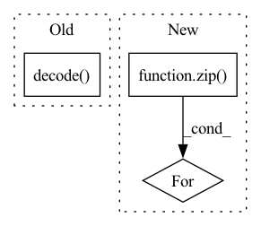

Pattern ID :35547
Before Change
// into datafrane to decode string
df = tfds.as_dataframe(ds.take(max_examples))
df["context"] = df["context"].str.decode("utf-8")
df["question"] = df["question"].str.decode( "utf-8")
// populate this with data records
self._examples = [{
"context": row["context"],After Change
answers_start = row["answers"]["answer_start"].numpy()
answers = []
for label, start in zip( answers_text, answers_start):
span = dtypes.SpanLabel(start, start + len(label))
answers.append(dtypes.AnnotationCluster(label=label.decode("utf-8"), spans=[span]))
self._examples = [{In pattern: SUPERPATTERN
Frequency: 3
Non-data size: 3
Instances Fragment ID: 101424847
Project Name: pair-code/lit
Commit Name: a6c039d5551e66775d097a30ab69969aa5b65551
Time: 2022-06-24
Author: 31214277+aryan1107@users.noreply.github.com
File Name: lit_nlp/examples/datasets/question_answering.py
M Class Name: TyDiQA
N Class Name: TyDiQA
M Method Name: __init__(3)
N Method Name: __init__(4)
M Parent Class: lit_dataset.Dataset
N Parent Class: lit_dataset.Dataset
M File Name: lit_nlp/examples/datasets/question_answering.py
N File Name: lit_nlp/examples/datasets/question_answering.py
M Start Line: 11
M End Line: 24
N Start Line: 14
N End Line: 33
Before Change
check=True,
executable="/bin/bash",
stdout=subprocess.PIPE)
stdout = proc.stdout.decode( "utf-8")
results = stdout.strip().split("\n")
assert len(results) == len(running_jobs), (results, running_jobs)
After Change
job_status = query_job_status(running_job_ids)
// Process the results
for job, status in zip( running_jobs, job_status):
set_status(job["job_id"], status)
def _readable_time_duration(start: int) -> str: Fragment ID: 101424850
Project Name: skypilot-org/skypilot
Commit Name: b274762ff8792f841e5090cc7e32792eb58ada6c
Time: 2022-01-10
Author: zhanghao.wu@outlook.com
File Name: prototype/sky/backends/remote_libs/job_lib.py
M Class Name: AnonimousClass
N Class Name: AnonimousClass
M Method Name: _update_status(0)
N Method Name: _update_status(0)
M Parent Class:
N Parent Class:
M File Name: prototype/sky/backends/remote_libs/job_lib.py
N File Name: prototype/sky/backends/remote_libs/job_lib.py
M Start Line: 133
M End Line: 161
N Start Line: 161
N End Line: 169
Before Change
// creating output Dict
output = {
"generated_text" : self.tokenizer.decode( predict_answer_tokens) ,
"generated_text2" : self.tokenizer.decode(predict_answer_tokens),
// adding answer_text for debugging
"answers_text": answers_text[i]After Change
// Getting ROUGE scores
for ex, mo in zip( inputs, prediction_output):
score = self._scorer.score(
target=ex["context"],
prediction=self._get_pred_string(mo["generated_text"]))
mo["rougeL"] = float(score["rougeL"].fmeasure) Fragment ID: 101424849
Project Name: pair-code/lit
Commit Name: 5bb0c65a8e93b1a372f4de64beff6425df57b9da
Time: 2022-06-28
Author: 31214277+aryan1107@users.noreply.github.com
File Name: lit_nlp/examples/models/tydi.py
M Class Name: TyDiModel
N Class Name: TyDiModel
M Method Name: predict_minibatch(2)
N Method Name: predict_minibatch(2)
M Parent Class: lit_model.Model
N Parent Class: lit_model.Model
M File Name: lit_nlp/examples/models/tydi.py
N File Name: lit_nlp/examples/models/tydi.py
M Start Line: 64
M End Line: 99
N Start Line: 69
N End Line: 95